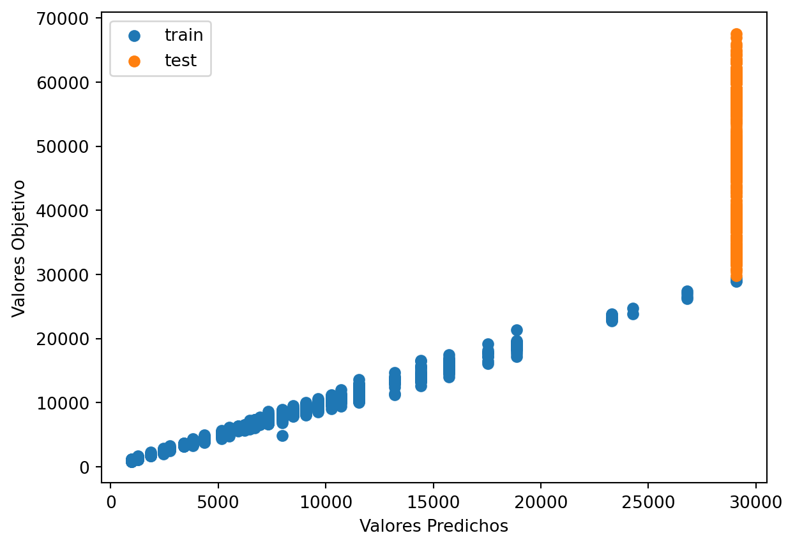

'C:\\Users\\dofca\\Desktop\\series'Predicción 1 paso adelante
Vamos a importar la bases de datos y a convertirlas en objetos de series de Tiempo. \(\{X_t\}\)
Code
# librerias
import pandas as pd
import numpy as np
import matplotlib.pylab as plt
import sklearn
import openpyxl
from skforecast.ForecasterAutoreg import ForecasterAutoreg
import warnings
print(f"Matplotlib Version: {plt.__version__}")
print(f"Pandas Version: {pd.__version__}")
print(f"Numpy Version: {np.__version__}")
print(f"Sklearn: {sklearn.__version__}")Matplotlib Version: 1.25.2
Pandas Version: 2.0.3
Numpy Version: 1.25.2
Sklearn: 1.3.1Code
['Sheet1']
FechaTiempo Valor
0 2021-12-31 46214.37
1 2021-12-30 47150.71
2 2021-12-29 46483.36
3 2021-12-28 47543.30
4 2021-12-27 50718.11
... ... ...
1821 2017-01-05 994.02
1822 2017-01-04 1122.56
1823 2017-01-03 1036.99
1824 2017-01-02 1014.10
1825 2017-01-01 998.80
[1826 rows x 2 columns]
<class 'pandas.core.frame.DataFrame'>Notamos que estan organizador del más reciente al más antiguo asi entonces buscaremos organiarla cámo debe ser
Code
Valor
FechaTiempo
2017-01-01 998.80
2017-01-02 1014.10
2017-01-03 1036.99
2017-01-04 1122.56
2017-01-05 994.02
... ...
2021-12-27 50718.11
2021-12-28 47543.30
2021-12-29 46483.36
2021-12-30 47150.71
2021-12-31 46214.37
[1826 rows x 1 columns]Code
['Sheet1']
Unnamed: 0 V1
0 2017-01-02 0.015202
1 2017-01-03 0.022321
2 2017-01-04 0.079290
3 2017-01-05 -0.121610
4 2017-01-06 -0.108785
... ... ...
1820 2021-12-27 -0.001440
1821 2021-12-28 -0.064642
1822 2021-12-29 -0.022546
1823 2021-12-30 0.014255
1824 2021-12-31 -0.020058
[1825 rows x 2 columns]
<class 'pandas.core.frame.DataFrame'>0.1 Serie original
<class 'pandas.core.frame.DataFrame'>
DatetimeIndex: 1826 entries, 2017-01-01 to 2021-12-31
Freq: D
Data columns (total 1 columns):
# Column Non-Null Count Dtype
--- ------ -------------- -----
0 Valor 1826 non-null float64
dtypes: float64(1)
memory usage: 28.5 KB
NoneCode
<class 'pandas.core.series.Series'>Se tiene concocimieno de que los árboles no son buenos manejando la tendencia, pero debido análisis descriptivo previo utilizaremos el método tanto para la serie original cómo para la serie diferenciada la cuál no presenta tendencía. Ademas miraremos si se tienen datos faltantes y si es regularmente espaciada pues esto es importante en la implementaciòn del modelo
Numero de filas con valores faltantes: 0.0Code
True0.2 PACF
usaremos la funcion de autocorrealcion parcial para darnos una idea de cuantos rezagos usaremos en el modelo
Code

array([ 1.00000000e+00, 9.97420147e-01, 1.43160372e-02, 8.32568596e-03,
-2.16200676e-02, -6.64909379e-02, -2.05655458e-02, -1.11736885e-02,
2.64788871e-02, 1.88209990e-02, -1.95036725e-03, -3.88385078e-02,
1.46649638e-02, 4.02839902e-02, -3.20071212e-02, 7.74967752e-03,
8.32547029e-04, -3.67461933e-03, -2.23679602e-02, 3.46733025e-02,
-1.44698212e-02, -3.65428193e-02, 4.56437447e-02, -1.61095969e-02,
-1.14022513e-02, -2.79038247e-02, -6.17605219e-03, -5.56504201e-03,
-2.17656400e-02, -9.49903080e-02, 8.18256708e-03, -2.54952528e-02,
-4.40369560e-02, 5.88072667e-02, -4.49650306e-02, 1.84696791e-02,
1.29335086e-02, -3.01602433e-02, -2.24434633e-02, 3.04122054e-03,
2.43040409e-02, -6.97004162e-02, 1.49355410e-02, 3.10018773e-02,
-1.10061127e-02, -7.95068046e-02, 1.24266404e-02, -1.13964700e-02,
-4.03688623e-03, 1.55020918e-02, 1.70520860e-02, 1.74989043e-03,
1.21015350e-02, -3.07520794e-02, -2.40427813e-02, 3.27927080e-02,
-6.53037375e-03, 2.86474352e-02, -1.96808480e-02, -7.90078780e-02,
-2.18795898e-02, 7.65068090e-02, -8.24179943e-03, -1.35019893e-02,
2.53365289e-02, 3.52541195e-02, -8.01130656e-03, -3.91247489e-02,
-4.42760666e-02, 3.52794241e-02, 3.73066297e-02, -1.08543965e-02,
-1.17295344e-02, -6.29211466e-03, 4.27725260e-02, 1.80727993e-02,
-2.17990186e-02, 1.05513512e-02, 3.66616603e-03, 2.96900412e-02,
-1.55035039e-02, -5.30306130e-04, -4.40593353e-02, 3.84112629e-02,
-6.68843658e-03, 7.77826673e-04, 1.31354302e-02, -8.62851872e-03,
3.71172338e-02, 3.88706785e-03, 3.25068553e-02, 4.23596316e-02,
-3.65463786e-03, -6.20868209e-03, 4.90171389e-02, -2.61232839e-03,
-8.52400827e-03, 2.99264007e-03, 5.96575554e-03, 2.75967006e-02,
1.76070503e-03, 1.60482324e-02, 8.28280601e-03, -3.97355197e-03,
-4.20674978e-02, -3.28793301e-02, 3.38334033e-02, 1.58642323e-02,
2.62085867e-02, 2.97071376e-03, 1.71855475e-02, 1.72643895e-02,
3.05017035e-02, -1.35655469e-02, -5.31464285e-02, -1.75808674e-02,
-5.71492462e-02, -6.12127146e-02, 1.42092759e-02, -4.54482085e-02,
6.56194552e-02, -3.41984432e-03, -2.08306963e-02, 1.12317601e-03,
-2.08718936e-02, 2.95680402e-04, 2.94274144e-02, -1.83342533e-02,
1.23501400e-02, -5.31964809e-02, 1.88857866e-02, 6.64954781e-03,
-1.43379447e-02, -2.82466048e-02, 3.64362606e-02, 2.78739121e-02,
4.00735769e-02, 1.60950134e-02, -2.78719893e-02, -1.59682260e-02,
-6.23924118e-03, -8.63544090e-03, 5.67106623e-02, 8.27328234e-03,
4.69537337e-02, 7.33401221e-03, 9.90374812e-03, -2.04958984e-02,
5.00599531e-02, 2.47099009e-02, 1.23689854e-02, 2.88242312e-02,
-7.26544560e-03, -2.51611592e-03, -1.60389275e-02, -2.31570751e-04,
3.27550941e-02, 3.31473878e-02, -1.59668082e-02, 1.28527880e-02,
-1.45727877e-02, 4.27316691e-02, 1.82124277e-02, 1.63395166e-02,
-1.86837948e-02, 4.88482302e-02, -1.57743652e-02, -3.09831365e-04,
-1.89292664e-02, -1.65888742e-03, 1.63917403e-03, -1.30371168e-02,
-2.33155335e-02, -2.96915098e-02, -2.06273374e-02, 4.11185718e-02,
-1.54189343e-02, 1.44576365e-02, -3.76912726e-02, 6.90010391e-03,
-5.77743500e-03, -1.40188637e-02, -4.60928488e-03, 2.17524133e-02,
-7.82033891e-03, -1.92378986e-02, -3.05231074e-02, 8.28077748e-03,
-2.11831058e-02, 1.41848402e-02, -2.97118304e-02, -2.10906457e-02,
-1.51244719e-02, -4.85382690e-03, -1.91053390e-02, -3.03267295e-02,
1.77146734e-02, -3.04039577e-02, -1.14836058e-02, -6.85499644e-03,
-6.65167786e-03, 2.95699024e-03, 6.03414560e-03, 1.16911360e-02,
1.40041081e-03, -6.76935135e-03, -1.99822959e-02, 5.51752430e-03,
-2.10847546e-02, -7.18625743e-02, 8.63421171e-03, -1.10288853e-02,
-2.25733934e-02, 1.37294158e-02, 6.89325437e-03, -2.29161625e-02,
1.23999856e-02, 1.70546501e-02, 1.74117842e-03, -1.93238358e-02,
-1.83998668e-02, 4.29486879e-02, 4.14616038e-03, 5.70185572e-02,
-2.05325115e-02, -1.24786266e-03, -1.03254954e-02, -3.57573155e-02,
-5.01515489e-02, 2.03704280e-02, -4.35929732e-02, -7.38676493e-03,
-2.43014268e-02, -2.42638427e-02, 1.71087053e-02, -3.19742139e-02,
1.44070451e-03, -2.16294341e-02, 1.64339276e-02, 3.88857254e-02,
-1.35817837e-02, -3.72236303e-02, 1.70908329e-02, -4.42727962e-02,
8.03853006e-03, -1.16607008e-03, -3.42341762e-02, 4.01871212e-02,
-7.45536453e-05, 1.15154434e-02, 1.24299915e-02, 2.68021128e-02,
-9.64315448e-03, -5.46141388e-03, -2.44323785e-03, -2.54014031e-02,
-2.03952780e-03, 4.92366525e-03, -4.68436271e-03, -1.31835699e-02,
-4.76821607e-02, -1.88930236e-02, 1.30503528e-02, 2.08437365e-02,
1.33966358e-02, 1.13875457e-02, 2.48702460e-03, -3.67389694e-03,
5.22529370e-03, 1.41512307e-02, -1.04593709e-02, 1.19960657e-02,
2.30289603e-02, -1.29164094e-02, -6.84866454e-02, 4.79950896e-04,
2.78088050e-02, -8.54368533e-03, 5.97798147e-03, 1.48702416e-02,
-2.30013156e-02, 2.22415074e-02, 2.23569473e-02, -9.22784092e-03,
-2.50679846e-02, -8.66007569e-03, -6.57708149e-02, 9.05987059e-03,
-4.63119627e-03, 1.05235817e-02, -7.43702104e-03, -1.22062472e-02,
4.11623022e-02, -2.23490333e-02, -3.17178546e-02, 3.45309242e-02,
8.64316002e-03, 9.57089467e-03, 2.88525618e-02, 3.49899238e-02,
2.21508425e-02, 3.72112010e-02, 1.16919064e-02, 1.77118242e-02,
-3.24603405e-02, 1.27001670e-02, -4.74187985e-02, 4.00286316e-02,
-2.58404466e-02, -3.07331701e-03, -7.81151761e-03, -2.90424255e-02,
8.13580750e-03, -2.39895708e-02, -6.36117717e-03, 2.63070654e-03,
-1.05461221e-02, 2.92048113e-02, -1.86299124e-04, -4.12830566e-03,
-1.17998033e-02, -1.18160992e-02, 4.32107807e-04, -1.81627229e-02,
1.98359185e-02, 1.00646166e-02, -1.26461222e-02, -2.60622704e-03,
3.67424002e-02, 1.82104425e-03, 1.52220352e-02, -5.35907575e-03,
-2.18962499e-04, 6.61174007e-04, 2.27252797e-02, -2.92407883e-03,
-1.26736405e-02, 2.40680871e-02, 2.98768975e-03, 2.77788734e-02,
3.46233953e-03, 3.36272793e-02, -8.12321169e-03, -1.54525772e-02,
-3.43789613e-03, 3.29625701e-03, -1.72737662e-02, -3.50416112e-02,
-2.10695692e-02, 2.04856817e-02, 5.33495766e-03, 1.70959501e-02,
-4.01938437e-02, -1.96291282e-03, -1.60972712e-03, -2.82954716e-02,
-3.12503945e-02, -8.00801978e-03, -3.75004791e-03, -9.50506474e-03,
3.71845637e-02, 3.01580206e-02, -9.18347705e-03, -1.32259447e-02,
-2.16457975e-02, 2.33490331e-02, 3.56516909e-03, -6.48253565e-03,
3.82506917e-03, 2.36159112e-03, 5.84204891e-03, 2.04932024e-02,
9.97363648e-03, -1.95683501e-02, -2.44179291e-02, -9.65308557e-03,
9.34570056e-03, 2.66407297e-03, -3.36869156e-02, 1.24567631e-03,
1.09435878e-02, 1.52749433e-02, 9.14501791e-03, 8.26701313e-03,
-3.15384743e-03, 1.25007952e-02, -2.14876244e-02, -9.62489113e-03,
7.88850820e-03, 1.95622459e-02, -2.08497673e-02, -1.14023050e-02,
1.86448121e-02, -1.02349355e-02, -8.32842028e-03, -2.21430431e-02,
-5.45592033e-03, -1.43473437e-02, 1.78245698e-02, 1.71387693e-02,
-1.86369432e-03])Code
n_steps set to 1Observamos que con el pacf se nos recomienda usar solo un retraso el mas proximo, lo cuál nos recueda que cuando se quizo establecer una componente estacional se sugeria un periodo de 2.5, por lo tanto teniendo encuenta lo anterior usaremos 3 retrasos para la serie original
0.3 Serie Trasnformada y diferenciada
Code
<class 'pandas.core.frame.DataFrame'>
RangeIndex: 1825 entries, 0 to 1824
Data columns (total 2 columns):
# Column Non-Null Count Dtype
--- ------ -------------- -----
0 Unnamed: 0 1825 non-null object
1 V1 1825 non-null float64
dtypes: float64(1), object(1)
memory usage: 28.6+ KB
None
<class 'pandas.core.frame.DataFrame'>
RangeIndex: 1825 entries, 0 to 1824
Data columns (total 2 columns):
# Column Non-Null Count Dtype
--- ------ -------------- -----
0 Fecha 1825 non-null object
1 Valor 1825 non-null float64
dtypes: float64(1), object(1)
memory usage: 28.6+ KB
NoneCode
<class 'pandas.core.frame.DataFrame'>
Valor
Fecha
2017-01-02 0.015202
2017-01-03 0.022321
2017-01-04 0.079290
2017-01-05 -0.121610
2017-01-06 -0.108785
... ...
2021-12-27 -0.001440
2021-12-28 -0.064642
2021-12-29 -0.022546
2021-12-30 0.014255
2021-12-31 -0.020058
[1825 rows x 1 columns]<class 'pandas.core.series.Series'>Numero de filas con valores faltantes: 0.0Code
True0.4 PACF
usaremos la funcion de autocorrealcion parcial para darnos una idea de cuantos rezagos usaremos en el modelo
Code
array([ 1.00000000e+00, 9.97420147e-01, 1.43160372e-02, 8.32568596e-03,
-2.16200676e-02, -6.64909379e-02, -2.05655458e-02, -1.11736885e-02,
2.64788871e-02, 1.88209990e-02, -1.95036725e-03, -3.88385078e-02,
1.46649638e-02, 4.02839902e-02, -3.20071212e-02, 7.74967752e-03,
8.32547029e-04, -3.67461933e-03, -2.23679602e-02, 3.46733025e-02,
-1.44698212e-02, -3.65428193e-02, 4.56437447e-02, -1.61095969e-02,
-1.14022513e-02, -2.79038247e-02, -6.17605219e-03, -5.56504201e-03,
-2.17656400e-02, -9.49903080e-02, 8.18256708e-03, -2.54952528e-02,
-4.40369560e-02, 5.88072667e-02, -4.49650306e-02, 1.84696791e-02,
1.29335086e-02, -3.01602433e-02, -2.24434633e-02, 3.04122054e-03,
2.43040409e-02, -6.97004162e-02, 1.49355410e-02, 3.10018773e-02,
-1.10061127e-02, -7.95068046e-02, 1.24266404e-02, -1.13964700e-02,
-4.03688623e-03, 1.55020918e-02, 1.70520860e-02, 1.74989043e-03,
1.21015350e-02, -3.07520794e-02, -2.40427813e-02, 3.27927080e-02,
-6.53037375e-03, 2.86474352e-02, -1.96808480e-02, -7.90078780e-02,
-2.18795898e-02, 7.65068090e-02, -8.24179943e-03, -1.35019893e-02,
2.53365289e-02, 3.52541195e-02, -8.01130656e-03, -3.91247489e-02,
-4.42760666e-02, 3.52794241e-02, 3.73066297e-02, -1.08543965e-02,
-1.17295344e-02, -6.29211466e-03, 4.27725260e-02, 1.80727993e-02,
-2.17990186e-02, 1.05513512e-02, 3.66616603e-03, 2.96900412e-02,
-1.55035039e-02, -5.30306130e-04, -4.40593353e-02, 3.84112629e-02,
-6.68843658e-03, 7.77826673e-04, 1.31354302e-02, -8.62851872e-03,
3.71172338e-02, 3.88706785e-03, 3.25068553e-02, 4.23596316e-02,
-3.65463786e-03, -6.20868209e-03, 4.90171389e-02, -2.61232839e-03,
-8.52400827e-03, 2.99264007e-03, 5.96575554e-03, 2.75967006e-02,
1.76070503e-03, 1.60482324e-02, 8.28280601e-03, -3.97355197e-03,
-4.20674978e-02, -3.28793301e-02, 3.38334033e-02, 1.58642323e-02,
2.62085867e-02, 2.97071376e-03, 1.71855475e-02, 1.72643895e-02,
3.05017035e-02, -1.35655469e-02, -5.31464285e-02, -1.75808674e-02,
-5.71492462e-02, -6.12127146e-02, 1.42092759e-02, -4.54482085e-02,
6.56194552e-02, -3.41984432e-03, -2.08306963e-02, 1.12317601e-03,
-2.08718936e-02, 2.95680402e-04, 2.94274144e-02, -1.83342533e-02,
1.23501400e-02, -5.31964809e-02, 1.88857866e-02, 6.64954781e-03,
-1.43379447e-02, -2.82466048e-02, 3.64362606e-02, 2.78739121e-02,
4.00735769e-02, 1.60950134e-02, -2.78719893e-02, -1.59682260e-02,
-6.23924118e-03, -8.63544090e-03, 5.67106623e-02, 8.27328234e-03,
4.69537337e-02, 7.33401221e-03, 9.90374812e-03, -2.04958984e-02,
5.00599531e-02, 2.47099009e-02, 1.23689854e-02, 2.88242312e-02,
-7.26544560e-03, -2.51611592e-03, -1.60389275e-02, -2.31570751e-04,
3.27550941e-02, 3.31473878e-02, -1.59668082e-02, 1.28527880e-02,
-1.45727877e-02, 4.27316691e-02, 1.82124277e-02, 1.63395166e-02,
-1.86837948e-02, 4.88482302e-02, -1.57743652e-02, -3.09831365e-04,
-1.89292664e-02, -1.65888742e-03, 1.63917403e-03, -1.30371168e-02,
-2.33155335e-02, -2.96915098e-02, -2.06273374e-02, 4.11185718e-02,
-1.54189343e-02, 1.44576365e-02, -3.76912726e-02, 6.90010391e-03,
-5.77743500e-03, -1.40188637e-02, -4.60928488e-03, 2.17524133e-02,
-7.82033891e-03, -1.92378986e-02, -3.05231074e-02, 8.28077748e-03,
-2.11831058e-02, 1.41848402e-02, -2.97118304e-02, -2.10906457e-02,
-1.51244719e-02, -4.85382690e-03, -1.91053390e-02, -3.03267295e-02,
1.77146734e-02, -3.04039577e-02, -1.14836058e-02, -6.85499644e-03,
-6.65167786e-03, 2.95699024e-03, 6.03414560e-03, 1.16911360e-02,
1.40041081e-03, -6.76935135e-03, -1.99822959e-02, 5.51752430e-03,
-2.10847546e-02, -7.18625743e-02, 8.63421171e-03, -1.10288853e-02,
-2.25733934e-02, 1.37294158e-02, 6.89325437e-03, -2.29161625e-02,
1.23999856e-02, 1.70546501e-02, 1.74117842e-03, -1.93238358e-02,
-1.83998668e-02, 4.29486879e-02, 4.14616038e-03, 5.70185572e-02,
-2.05325115e-02, -1.24786266e-03, -1.03254954e-02, -3.57573155e-02,
-5.01515489e-02, 2.03704280e-02, -4.35929732e-02, -7.38676493e-03,
-2.43014268e-02, -2.42638427e-02, 1.71087053e-02, -3.19742139e-02,
1.44070451e-03, -2.16294341e-02, 1.64339276e-02, 3.88857254e-02,
-1.35817837e-02, -3.72236303e-02, 1.70908329e-02, -4.42727962e-02,
8.03853006e-03, -1.16607008e-03, -3.42341762e-02, 4.01871212e-02,
-7.45536453e-05, 1.15154434e-02, 1.24299915e-02, 2.68021128e-02,
-9.64315448e-03, -5.46141388e-03, -2.44323785e-03, -2.54014031e-02,
-2.03952780e-03, 4.92366525e-03, -4.68436271e-03, -1.31835699e-02,
-4.76821607e-02, -1.88930236e-02, 1.30503528e-02, 2.08437365e-02,
1.33966358e-02, 1.13875457e-02, 2.48702460e-03, -3.67389694e-03,
5.22529370e-03, 1.41512307e-02, -1.04593709e-02, 1.19960657e-02,
2.30289603e-02, -1.29164094e-02, -6.84866454e-02, 4.79950896e-04,
2.78088050e-02, -8.54368533e-03, 5.97798147e-03, 1.48702416e-02,
-2.30013156e-02, 2.22415074e-02, 2.23569473e-02, -9.22784092e-03,
-2.50679846e-02, -8.66007569e-03, -6.57708149e-02, 9.05987059e-03,
-4.63119627e-03, 1.05235817e-02, -7.43702104e-03, -1.22062472e-02,
4.11623022e-02, -2.23490333e-02, -3.17178546e-02, 3.45309242e-02,
8.64316002e-03, 9.57089467e-03, 2.88525618e-02, 3.49899238e-02,
2.21508425e-02, 3.72112010e-02, 1.16919064e-02, 1.77118242e-02,
-3.24603405e-02, 1.27001670e-02, -4.74187985e-02, 4.00286316e-02,
-2.58404466e-02, -3.07331701e-03, -7.81151761e-03, -2.90424255e-02,
8.13580750e-03, -2.39895708e-02, -6.36117717e-03, 2.63070654e-03,
-1.05461221e-02, 2.92048113e-02, -1.86299124e-04, -4.12830566e-03,
-1.17998033e-02, -1.18160992e-02, 4.32107807e-04, -1.81627229e-02,
1.98359185e-02, 1.00646166e-02, -1.26461222e-02, -2.60622704e-03,
3.67424002e-02, 1.82104425e-03, 1.52220352e-02, -5.35907575e-03,
-2.18962499e-04, 6.61174007e-04, 2.27252797e-02, -2.92407883e-03,
-1.26736405e-02, 2.40680871e-02, 2.98768975e-03, 2.77788734e-02,
3.46233953e-03, 3.36272793e-02, -8.12321169e-03, -1.54525772e-02,
-3.43789613e-03, 3.29625701e-03, -1.72737662e-02, -3.50416112e-02,
-2.10695692e-02, 2.04856817e-02, 5.33495766e-03, 1.70959501e-02,
-4.01938437e-02, -1.96291282e-03, -1.60972712e-03, -2.82954716e-02,
-3.12503945e-02, -8.00801978e-03, -3.75004791e-03, -9.50506474e-03,
3.71845637e-02, 3.01580206e-02, -9.18347705e-03, -1.32259447e-02,
-2.16457975e-02, 2.33490331e-02, 3.56516909e-03, -6.48253565e-03,
3.82506917e-03, 2.36159112e-03, 5.84204891e-03, 2.04932024e-02,
9.97363648e-03, -1.95683501e-02, -2.44179291e-02, -9.65308557e-03,
9.34570056e-03, 2.66407297e-03, -3.36869156e-02, 1.24567631e-03,
1.09435878e-02, 1.52749433e-02, 9.14501791e-03, 8.26701313e-03,
-3.15384743e-03, 1.25007952e-02, -2.14876244e-02, -9.62489113e-03,
7.88850820e-03, 1.95622459e-02, -2.08497673e-02, -1.14023050e-02,
1.86448121e-02, -1.02349355e-02, -8.32842028e-03, -2.21430431e-02,
-5.45592033e-03, -1.43473437e-02, 1.78245698e-02, 1.71387693e-02,
-1.86369432e-03])Code
n_steps set to 1Vemos que para la serie diferencidad tenemos un resultado igual que para la serie original, asì tomaremos lo mismo 3 retrasos
1 Árboles de decisión
1.0.1 Creación de los rezagos
Debido al análisis previo tomaremos los rezagos de 3 días atrás para poder predecir un paso adelante.
Code
Empty DataFrame
Columns: []
Index: []
Empty DataFrame
Columns: []
Index: []Code
DatetimeIndex(['2017-01-01', '2017-01-02', '2017-01-03', '2017-01-04',
'2017-01-05', '2017-01-06', '2017-01-07', '2017-01-08',
'2017-01-09', '2017-01-10',
...
'2021-12-22', '2021-12-23', '2021-12-24', '2021-12-25',
'2021-12-26', '2021-12-27', '2021-12-28', '2021-12-29',
'2021-12-30', '2021-12-31'],
dtype='datetime64[ns]', length=1826, freq='D')
0
2017-01-01 998.80
2017-01-02 1014.10
2017-01-03 1036.99
2017-01-04 1122.56
2017-01-05 994.02
... ...
2021-12-27 50718.11
2021-12-28 47543.30
2021-12-29 46483.36
2021-12-30 47150.71
2021-12-31 46214.37
[1826 rows x 1 columns]Code
DatetimeIndex(['2017-01-02', '2017-01-03', '2017-01-04', '2017-01-05',
'2017-01-06', '2017-01-07', '2017-01-08', '2017-01-09',
'2017-01-10', '2017-01-11',
...
'2021-12-22', '2021-12-23', '2021-12-24', '2021-12-25',
'2021-12-26', '2021-12-27', '2021-12-28', '2021-12-29',
'2021-12-30', '2021-12-31'],
dtype='datetime64[ns]', length=1825, freq='D')
0
2017-01-02 0.015202
2017-01-03 0.022321
2017-01-04 0.079290
2017-01-05 -0.121610
2017-01-06 -0.108785
... ...
2021-12-27 -0.001440
2021-12-28 -0.064642
2021-12-29 -0.022546
2021-12-30 0.014255
2021-12-31 -0.020058
[1825 rows x 1 columns]Code
t-3 t-2 t-1
2017-01-01 NaN NaN NaN
2017-01-02 NaN NaN 998.80
2017-01-03 NaN 998.80 1014.10
2017-01-04 998.80 1014.10 1036.99
2017-01-05 1014.10 1036.99 1122.56
... ... ... ...
2021-12-27 50841.48 50442.22 50791.21
2021-12-28 50442.22 50791.21 50718.11
2021-12-29 50791.21 50718.11 47543.30
2021-12-30 50718.11 47543.30 46483.36
2021-12-31 47543.30 46483.36 47150.71
[1826 rows x 3 columns]Code
t-3 t-2 t-1
2017-01-02 NaN NaN NaN
2017-01-03 NaN NaN 0.015202
2017-01-04 NaN 0.015202 0.022321
2017-01-05 0.015202 0.022321 0.079290
2017-01-06 0.022321 0.079290 -0.121610
... ... ... ...
2021-12-27 -0.000168 -0.007884 0.006895
2021-12-28 -0.007884 0.006895 -0.001440
2021-12-29 0.006895 -0.001440 -0.064642
2021-12-30 -0.001440 -0.064642 -0.022546
2021-12-31 -0.064642 -0.022546 0.014255
[1825 rows x 3 columns] t-3 t-2 t-1 t
2017-01-01 NaN NaN NaN 998.80
2017-01-02 NaN NaN 998.80 1014.10
2017-01-03 NaN 998.80 1014.10 1036.99
2017-01-04 998.80 1014.10 1036.99 1122.56
2017-01-05 1014.10 1036.99 1122.56 994.02
2017-01-06 1036.99 1122.56 994.02 891.56
2017-01-07 1122.56 994.02 891.56 897.14
2017-01-08 994.02 891.56 897.14 906.17
2017-01-09 891.56 897.14 906.17 899.99
2017-01-10 897.14 906.17 899.99 907.96
2017-01-11 906.17 899.99 907.96 788.81
2017-01-12 899.99 907.96 788.81 816.00
2017-01-13 907.96 788.81 816.00 826.90
2017-01-14 788.81 816.00 826.90 819.66 t-3 t-2 t-1 t
2017-01-02 NaN NaN NaN 0.015202
2017-01-03 NaN NaN 0.015202 0.022321
2017-01-04 NaN 0.015202 0.022321 0.079290
2017-01-05 0.015202 0.022321 0.079290 -0.121610
2017-01-06 0.022321 0.079290 -0.121610 -0.108785
2017-01-07 0.079290 -0.121610 -0.108785 0.006239
2017-01-08 -0.121610 -0.108785 0.006239 0.010015
2017-01-09 -0.108785 0.006239 0.010015 -0.006843
2017-01-10 0.006239 0.010015 -0.006843 0.008817
2017-01-11 0.010015 -0.006843 0.008817 -0.140675
2017-01-12 -0.006843 0.008817 -0.140675 0.033889
2017-01-13 0.008817 -0.140675 0.033889 0.013269
2017-01-14 -0.140675 0.033889 0.013269 -0.008794
2017-01-15 0.033889 0.013269 -0.008794 0.003422Code
t-3 t-2 t-1 t
2017-01-04 998.80 1014.10 1036.99 1122.56
2017-01-05 1014.10 1036.99 1122.56 994.02
2017-01-06 1036.99 1122.56 994.02 891.56
2017-01-07 1122.56 994.02 891.56 897.14
2017-01-08 994.02 891.56 897.14 906.17
... ... ... ... ...
2021-12-27 50841.48 50442.22 50791.21 50718.11
2021-12-28 50442.22 50791.21 50718.11 47543.30
2021-12-29 50791.21 50718.11 47543.30 46483.36
2021-12-30 50718.11 47543.30 46483.36 47150.71
2021-12-31 47543.30 46483.36 47150.71 46214.37
[1823 rows x 4 columns]7292Code
t-3 t-2 t-1 t
2017-01-05 0.015202 0.022321 0.079290 -0.121610
2017-01-06 0.022321 0.079290 -0.121610 -0.108785
2017-01-07 0.079290 -0.121610 -0.108785 0.006239
2017-01-08 -0.121610 -0.108785 0.006239 0.010015
2017-01-09 -0.108785 0.006239 0.010015 -0.006843
... ... ... ... ...
2021-12-27 -0.000168 -0.007884 0.006895 -0.001440
2021-12-28 -0.007884 0.006895 -0.001440 -0.064642
2021-12-29 0.006895 -0.001440 -0.064642 -0.022546
2021-12-30 -0.001440 -0.064642 -0.022546 0.014255
2021-12-31 -0.064642 -0.022546 0.014255 -0.020058
[1822 rows x 4 columns]7288hemos creado lo necesario para tener los 3 rezagos y la prediccion un paso adelante ahora. así tenemos los modelos : 1. Para los datos originales \[y_{t} = f(y_{t-1},y_{t-2},y_{t-3}) + \epsilon\] 2. Para la serie con estabilización de varianza y difereciada \[\Delta y_t = f(\Delta y_{t-1}, \Delta y_{t-2}, \Delta y_{t-3}) + \epsilon\]
1.0.2 División de los datos
Code
# Split data Eliminada
Orig_Split = df1_Ori.values
# split into lagged variables and original time series
X1 = Orig_Split[:, 0:-1] # slice all rows and start with column 0 and go up to but not including the last column
y1 = Orig_Split[:,-1] # slice all rows and last column, essentially separating out 't' column
print(X1)
print('Respuestas \n',y1)[[ 998.8 1014.1 1036.99]
[ 1014.1 1036.99 1122.56]
[ 1036.99 1122.56 994.02]
...
[50791.21 50718.11 47543.3 ]
[50718.11 47543.3 46483.36]
[47543.3 46483.36 47150.71]]
Respuestas
[ 1122.56 994.02 891.56 ... 46483.36 47150.71 46214.37]Code
# Split data Diferenciada
Dife_Split = df2_Dif.values
# split into lagged variables and original time series
X2 = Dife_Split[:, 0:-1] # slice all rows and start with column 0 and go up to but not including the last column
y2 = Dife_Split[:,-1] # slice all rows and last column, essentially separating out 't' column
print(X2)
print('Respuestas \n',y2)[[ 0.01520224 0.02232077 0.07928951]
[ 0.02232077 0.07928951 -0.12160974]
[ 0.07928951 -0.12160974 -0.10878459]
...
[ 0.00689479 -0.00144026 -0.06464217]
[-0.00144026 -0.06464217 -0.02254648]
[-0.06464217 -0.02254648 0.01425467]]
Respuestas
[-0.12160974 -0.10878459 0.00623919 ... -0.02254648 0.01425467
-0.02005828]2 Árbol para datos originales
2.0.0.1 Entrenamiento, Validación y prueba
Code
Y1 = y1
print('Complete Observations for Target after Supervised configuration: %d' %len(Y1))
traintarget_size = int(len(Y1) * 0.70)
valtarget_size = int(len(Y1) * 0.10)+1# Set split
testtarget_size = int(len(Y1) * 0.20)# Set split
print(traintarget_size,valtarget_size,testtarget_size)
print('Train + Validation + Test: %d' %(traintarget_size+valtarget_size+testtarget_size))Complete Observations for Target after Supervised configuration: 1823
1276 183 364
Train + Validation + Test: 1823Code
# Target Train-Validation-Test split(70-10-20)
train_target, val_target,test_target = Y1[0:traintarget_size], Y1[(traintarget_size):(traintarget_size+valtarget_size)],Y1[(traintarget_size+valtarget_size):len(Y1)]
print('Observations for Target: %d' % (len(Y1)))
print('Training Observations for Target: %d' % (len(train_target)))
print('Validation Observations for Target: %d' % (len(val_target)))
print('Test Observations for Target: %d' % (len(test_target)))Observations for Target: 1823
Training Observations for Target: 1276
Validation Observations for Target: 183
Test Observations for Target: 364Code
# Features Train--Val-Test split
trainfeature_size = int(len(X1) * 0.70)
valfeature_size = int(len(X1) * 0.10)+1# Set split
testfeature_size = int(len(X1) * 0.20)# Set split
train_feature, val_feature,test_feature = X1[0:traintarget_size],X1[(traintarget_size):(traintarget_size+valtarget_size)] ,X1[(traintarget_size+valtarget_size):len(Y1)]
print('Observations for Feature: %d' % (len(X1)))
print('Training Observations for Feature: %d' % (len(train_feature)))
print('Validation Observations for Feature: %d' % (len(val_feature)))
print('Test Observations for Feature: %d' % (len(test_feature)))Observations for Feature: 1823
Training Observations for Feature: 1276
Validation Observations for Feature: 183
Test Observations for Feature: 3642.0.1 Árbol
Code
# Decision Tree Regresion Model
from sklearn.tree import DecisionTreeRegressor
# Create a decision tree regression model with default arguments
decision_tree_Orig = DecisionTreeRegressor() # max-depth not set
# The maximum depth of the tree. If None, then nodes are expanded until all leaves are pure or until all leaves contain less than min_samples_split samples.
# Fit the model to the training features(covariables) and targets(respuestas)
decision_tree_Orig.fit(train_feature, train_target)
# Check the score on train and test
print("Coeficiente R2 sobre el conjunto de entrenamiento:",decision_tree_Orig.score(train_feature, train_target))
print("Coeficiente R2 sobre el conjunto de Validación:",decision_tree_Orig.score(val_feature,val_target)) # predictions are horrible if negative value, no relationship if 0
print("el RECM sobre validación es:",(((decision_tree_Orig.predict(val_feature)-val_target)**2).mean()) )Coeficiente R2 sobre el conjunto de entrenamiento: 1.0
Coeficiente R2 sobre el conjunto de Validación: 0.697469135281228
el RECM sobre validación es: 6824360.155536612Vemos que el R2 para los datos de validación es bueno así sin ningún ajuste, Se relizara un ajuste de la profundidad como hiperparametro para ver si mejora dicho valor
Code
# Find the best Max Depth
# Loop through a few different max depths and check the performance
# Try different max depths. We want to optimize our ML models to make the best predictions possible.
# For regular decision trees, max_depth, which is a hyperparameter, limits the number of splits in a tree.
# You can find the best value of max_depth based on the R-squared score of the model on the test set.
for d in [2, 3, 4, 5,6,7,8,9,10,11,12,13,14,15]:
# Create the tree and fit it
decision_tree_Orig = DecisionTreeRegressor(max_depth=d)
decision_tree_Orig.fit(train_feature, train_target)
# Print out the scores on train and test
print('max_depth=', str(d))
print("Coeficiente R2 sobre el conjunto de entrenamiento:",decision_tree_Orig.score(train_feature, train_target))
print("Coeficiente R2 sobre el conjunto de validación:",decision_tree_Orig.score(val_feature, val_target), '\n') # You want the test score to be positive and high
print("el RECM sobre el conjunto de validación es:",sklearn.metrics.mean_squared_error(decision_tree_Orig.predict(val_feature),val_target, squared=False))max_depth= 2
Coeficiente R2 sobre el conjunto de entrenamiento: 0.8641833855804382
Coeficiente R2 sobre el conjunto de validación: -0.3096623317395266
el RECM sobre el conjunto de validación es: 5435.328452325418
max_depth= 3
Coeficiente R2 sobre el conjunto de entrenamiento: 0.9651805280470427
Coeficiente R2 sobre el conjunto de validación: 0.46422772719484806
el RECM sobre el conjunto de validación es: 3476.452037988641
max_depth= 4
Coeficiente R2 sobre el conjunto de entrenamiento: 0.9846904732982006
Coeficiente R2 sobre el conjunto de validación: 0.6773389398995682
el RECM sobre el conjunto de validación es: 2697.859963056876
max_depth= 5
Coeficiente R2 sobre el conjunto de entrenamiento: 0.9891809414001131
Coeficiente R2 sobre el conjunto de validación: 0.7663366686101318
el RECM sobre el conjunto de validación es: 2295.8388837097596
max_depth= 6
Coeficiente R2 sobre el conjunto de entrenamiento: 0.9918052290572952
Coeficiente R2 sobre el conjunto de validación: 0.6785792116131668
el RECM sobre el conjunto de validación es: 2692.669840210029
max_depth= 7
Coeficiente R2 sobre el conjunto de entrenamiento: 0.9939577729677915
Coeficiente R2 sobre el conjunto de validación: 0.7134404751454829
el RECM sobre el conjunto de validación es: 2542.4566056238273
max_depth= 8
Coeficiente R2 sobre el conjunto de entrenamiento: 0.9952892190117961
Coeficiente R2 sobre el conjunto de validación: 0.7122730245872446
el RECM sobre el conjunto de validación es: 2547.630356880796
max_depth= 9
Coeficiente R2 sobre el conjunto de entrenamiento: 0.9969206521928918
Coeficiente R2 sobre el conjunto de validación: 0.7087139369031451
el RECM sobre el conjunto de validación es: 2563.3386028920927
max_depth= 10
Coeficiente R2 sobre el conjunto de entrenamiento: 0.9980208435086566
Coeficiente R2 sobre el conjunto de validación: 0.7075812987165642
el RECM sobre el conjunto de validación es: 2568.317417007087
max_depth= 11
Coeficiente R2 sobre el conjunto de entrenamiento: 0.9987905600593933
Coeficiente R2 sobre el conjunto de validación: 0.7093182749314967
el RECM sobre el conjunto de validación es: 2560.6781128640946
max_depth= 12
Coeficiente R2 sobre el conjunto de entrenamiento: 0.9992227814144231
Coeficiente R2 sobre el conjunto de validación: 0.7023942523309804
el RECM sobre el conjunto de validación es: 2590.996236826548
max_depth= 13
Coeficiente R2 sobre el conjunto de entrenamiento: 0.9995167904154337
Coeficiente R2 sobre el conjunto de validación: 0.6958069558601423
el RECM sobre el conjunto de validación es: 2619.514244792769
max_depth= 14
Coeficiente R2 sobre el conjunto de entrenamiento: 0.9997624797203807
Coeficiente R2 sobre el conjunto de validación: 0.7000391436415081
el RECM sobre el conjunto de validación es: 2601.227983196671
max_depth= 15
Coeficiente R2 sobre el conjunto de entrenamiento: 0.9998629094815242
Coeficiente R2 sobre el conjunto de validación: 0.7057748189347055
el RECM sobre el conjunto de validación es: 2576.238370696423Note que el score mayor para el conjunto de validación es para max depth = 5. después este valor el R2 comienza a oscilar en valores cercanos a 0.7. Ahora uniremos validacion y entrenamiento para re para reestimar los parametros
Code
print(type(train_feature))
print(type(val_feature))
#######
print(type(train_target))
print(type(val_target))
####
print(train_feature.shape)
print(val_feature.shape)
#####
####
print(train_target.shape)
print(val_target.shape)
###Concatenate Validation and test
train_val_feature=np.concatenate((train_feature,val_feature),axis=0)
train_val_target=np.concatenate((train_target,val_target),axis=0)
print(train_val_feature.shape)
print(train_val_target.shape)<class 'numpy.ndarray'>
<class 'numpy.ndarray'>
<class 'numpy.ndarray'>
<class 'numpy.ndarray'>
(1276, 3)
(183, 3)
(1276,)
(183,)
(1459, 3)
(1459,)Code
# Use the best max_depth
decision_tree_Orig = DecisionTreeRegressor(max_depth=5) # fill in best max depth here
decision_tree_Orig.fit(train_val_feature, train_val_target)
# Predict values for train and test
train_val_prediction = decision_tree_Orig.predict(train_val_feature)
test_prediction = decision_tree_Orig.predict(test_feature)
# Scatter the predictions vs actual values
plt.scatter(train_val_prediction, train_val_target, label='train') # blue
plt.scatter(test_prediction, test_target, label='test') # orange
# Agrega títulos a los ejes
plt.xlabel('Valores Predichos') # Título para el eje x
plt.ylabel('Valores Objetivo') # Título para el eje y
# Muestra una leyenda
plt.legend()
plt.show()
print("Raíz de la Pérdida cuadrática Entrenamiento:",sklearn.metrics.mean_squared_error( train_val_prediction, train_val_target,squared=False))
print("Raíz de la Pérdida cuadrática Prueba:",sklearn.metrics.mean_squared_error(test_prediction, test_target,squared=False))
Raíz de la Pérdida cuadrática Entrenamiento: 379.6739573163321
Raíz de la Pérdida cuadrática Prueba: 20803.68301403984Vemos que el RECM es menor para el entrenamiento y mayor para la prubea lo cuál podría indicar sobre ajuste pero notamos en el gráfico que para los valores de prueba se queda con la ultimá predicción dada para el entrenamiento
Code
|--- feature_2 <= 7621.53
| |--- feature_2 <= 4674.63
| | |--- feature_2 <= 2643.52
| | | |--- feature_2 <= 1603.78
| | | | |--- feature_2 <= 1123.59
| | | | | |--- value: [978.62]
| | | | |--- feature_2 > 1123.59
| | | | | |--- value: [1257.23]
| | | |--- feature_2 > 1603.78
| | | | |--- feature_2 <= 2029.78
| | | | | |--- value: [1867.15]
| | | | |--- feature_2 > 2029.78
| | | | | |--- value: [2443.26]
| | |--- feature_2 > 2643.52
| | | |--- feature_2 <= 3479.78
| | | | |--- feature_2 <= 3066.88
| | | | | |--- value: [2757.72]
| | | | |--- feature_2 > 3066.88
| | | | | |--- value: [3403.13]
| | | |--- feature_2 > 3479.78
| | | | |--- feature_2 <= 4124.92
| | | | | |--- value: [3821.26]
| | | | |--- feature_2 > 4124.92
| | | | | |--- value: [4341.35]
| |--- feature_2 > 4674.63
| | |--- feature_2 <= 6267.99
| | | |--- feature_2 <= 5638.17
| | | | |--- feature_2 <= 5364.32
| | | | | |--- value: [5146.57]
| | | | |--- feature_2 > 5364.32
| | | | | |--- value: [5511.71]
| | | |--- feature_2 > 5638.17
| | | | |--- feature_1 <= 6101.82
| | | | | |--- value: [5911.09]
| | | | |--- feature_1 > 6101.82
| | | | | |--- value: [6228.33]
| | |--- feature_2 > 6267.99
| | | |--- feature_2 <= 6773.45
| | | | |--- feature_2 <= 6592.66
| | | | | |--- value: [6447.39]
| | | | |--- feature_2 > 6592.66
| | | | | |--- value: [6709.36]
| | | |--- feature_2 > 6773.45
| | | | |--- feature_2 <= 6938.52
| | | | | |--- value: [6920.69]
| | | | |--- feature_2 > 6938.52
| | | | | |--- value: [7315.07]
|--- feature_2 > 7621.53
| |--- feature_2 <= 13615.27
| | |--- feature_2 <= 9928.84
| | | |--- feature_2 <= 8704.25
| | | | |--- feature_2 <= 8228.69
| | | | | |--- value: [7969.37]
| | | | |--- feature_2 > 8228.69
| | | | | |--- value: [8465.67]
| | | |--- feature_2 > 8704.25
| | | | |--- feature_2 <= 9383.12
| | | | | |--- value: [9087.07]
| | | | |--- feature_2 > 9383.12
| | | | | |--- value: [9638.44]
| | |--- feature_2 > 9928.84
| | | |--- feature_2 <= 10969.25
| | | | |--- feature_2 <= 10506.95
| | | | | |--- value: [10273.00]
| | | | |--- feature_2 > 10506.95
| | | | | |--- value: [10710.85]
| | | |--- feature_2 > 10969.25
| | | | |--- feature_1 <= 12789.33
| | | | | |--- value: [11533.88]
| | | | |--- feature_1 > 12789.33
| | | | | |--- value: [13198.58]
| |--- feature_2 > 13615.27
| | |--- feature_2 <= 20532.94
| | | |--- feature_2 <= 16687.31
| | | | |--- feature_2 <= 15071.83
| | | | | |--- value: [14419.04]
| | | | |--- feature_2 > 15071.83
| | | | | |--- value: [15735.35]
| | | |--- feature_2 > 16687.31
| | | | |--- feature_2 <= 17805.71
| | | | | |--- value: [17530.87]
| | | | |--- feature_2 > 17805.71
| | | | | |--- value: [18875.22]
| | |--- feature_2 > 20532.94
| | | |--- feature_2 <= 24274.07
| | | | |--- feature_0 <= 23652.97
| | | | | |--- value: [23281.46]
| | | | |--- feature_0 > 23652.97
| | | | | |--- value: [24270.12]
| | | |--- feature_2 > 24274.07
| | | | |--- feature_2 <= 27203.96
| | | | | |--- value: [26783.45]
| | | | |--- feature_2 > 27203.96
| | | | | |--- value: [29092.24]
Code
Ahora miraremos las predicciones comparadas con los valores verdaderos, para ver más claro lo anterior.
Code
1459
1459
364
364Code
1823Code
1823
1823Code
| observado | Predicción | |
|---|---|---|
| 2017-01-04 | 1122.56 | 978.616119 |
| 2017-01-05 | 994.02 | 978.616119 |
| 2017-01-06 | 891.56 | 978.616119 |
| 2017-01-07 | 897.14 | 978.616119 |
| 2017-01-08 | 906.17 | 978.616119 |
| 2017-01-09 | 899.99 | 978.616119 |
| 2017-01-10 | 907.96 | 978.616119 |
| 2017-01-11 | 788.81 | 978.616119 |
| 2017-01-12 | 816.00 | 978.616119 |
| 2017-01-13 | 826.90 | 978.616119 |
Code
#gráfico
ax = ObsvsPred1['observado'].plot(marker="o", figsize=(10, 6), linewidth=1, markersize=4) # Ajusta el grosor de las líneas y puntos
ObsvsPred1['Predicción'].plot(marker="o", linewidth=1, markersize=2, ax=ax) # Ajusta el grosor de las líneas y puntos
# Agrega una línea vertical roja
ax.axvline(x=indicetrian_val_test[1459].date(), color='red', linewidth=0.5) # Ajusta el grosor de la línea vertical
# Muestra una leyenda
plt.legend()
plt.show()Podemos observar que como nos anticipaba el RECM en el entrenamiento las predicciones son cercanas al valor real, pero para los datos de prueba se queda con lo ultimo visto para el entrenamiento sin tener encuenta el comportamiento de la serie.
3 Árbol para datos Diferenciados
3.0.0.1 Entrenamiento, Validación y prueba (Diferenciada)
Code
Y2 = y2
print('Complete Observations for Target after Supervised configuration: %d' %len(Y2))
traintarget_size = int(len(Y2) * 0.70)
valtarget_size = int(len(Y2) * 0.10)+1# Set split
testtarget_size = int(len(Y2) * 0.20)# Set split
print(traintarget_size,valtarget_size,testtarget_size)
print('Train + Validation + Test: %d' %(traintarget_size+valtarget_size+testtarget_size))Complete Observations for Target after Supervised configuration: 1822
1275 183 364
Train + Validation + Test: 1822Code
# Target Train-Validation-Test split(70-10-20)
train_target, val_target,test_target = Y2[0:traintarget_size], Y2[(traintarget_size):(traintarget_size+valtarget_size)],Y2[(traintarget_size+valtarget_size):len(Y2)]
print('Observations for Target: %d' % (len(Y2)))
print('Training Observations for Target: %d' % (len(train_target)))
print('Validation Observations for Target: %d' % (len(val_target)))
print('Test Observations for Target: %d' % (len(test_target)))Observations for Target: 1822
Training Observations for Target: 1275
Validation Observations for Target: 183
Test Observations for Target: 364Code
# Features Train--Val-Test split
trainfeature_size = int(len(X2) * 0.70)
valfeature_size = int(len(X2) * 0.10)+2# Set split
testfeature_size = int(len(X2) * 0.20)# Set split
train_feature, val_feature,test_feature = X2[0:traintarget_size],X2[(traintarget_size):(traintarget_size+valtarget_size)] ,X2[(traintarget_size+valtarget_size):len(Y2)]
print('Observations for Feature: %d' % (len(X2)))
print('Training Observations for Feature: %d' % (len(train_feature)))
print('Validation Observations for Feature: %d' % (len(val_feature)))
print('Test Observations for Feature: %d' % (len(test_feature)))Observations for Feature: 1822
Training Observations for Feature: 1275
Validation Observations for Feature: 183
Test Observations for Feature: 3643.0.1 Árbol
Code
# Decision Tree Regresion Model
from sklearn.tree import DecisionTreeRegressor
# Create a decision tree regression model with default arguments
decision_tree_Dif = DecisionTreeRegressor() # max-depth not set
# The maximum depth of the tree. If None, then nodes are expanded until all leaves are pure or until all leaves contain less than min_samples_split samples.
# Fit the model to the training features(covariables) and targets(respuestas)
decision_tree_Dif.fit(train_feature, train_target)
# Check the score on train and test
print("Coeficiente R2 sobre el conjunto de entrenamiento:",decision_tree_Dif.score(train_feature, train_target))
print("Coeficiente R2 sobre el conjunto de Validación:",decision_tree_Dif.score(val_feature,val_target)) # predictions are horrible if negative value, no relationship if 0
print("el RECM sobre validación es:",(((decision_tree_Dif.predict(val_feature)-val_target)**2).mean()) )Coeficiente R2 sobre el conjunto de entrenamiento: 1.0
Coeficiente R2 sobre el conjunto de Validación: -1.834601734864465
el RECM sobre validación es: 0.002291340627241473Vemos que el \(R^2\) en la validaciòn nos da negativo lo cual indica que el modelo es malo en las predicciones, pues es mejor predecir con la media cal sería un \(R^2 = 0\). intentaremos ajustar la profundidad del árbol para ver si mejoramos esto.
Code
# Find the best Max Depth
# Loop through a few different max depths and check the performance
# Try different max depths. We want to optimize our ML models to make the best predictions possible.
# For regular decision trees, max_depth, which is a hyperparameter, limits the number of splits in a tree.
# You can find the best value of max_depth based on the R-squared score of the model on the test set.
for d in [2, 3, 4, 5,6,7,8,9,10,11,12,13,14,15]:
# Create the tree and fit it
decision_tree_Dif = DecisionTreeRegressor(max_depth=d)
decision_tree_Dif.fit(train_feature, train_target)
# Print out the scores on train and test
print('max_depth=', str(d))
print("Coeficiente R2 sobre el conjunto de entrenamiento:",decision_tree_Dif.score(train_feature, train_target))
print("Coeficiente R2 sobre el conjunto de validación:",decision_tree_Dif.score(val_feature, val_target), '\n') # You want the test score to be positive and high
print("el RECM sobre el conjunto de validación es:",sklearn.metrics.mean_squared_error(decision_tree_Dif.predict(val_feature),val_target, squared=False))max_depth= 2
Coeficiente R2 sobre el conjunto de entrenamiento: 0.02112211774494066
Coeficiente R2 sobre el conjunto de validación: -0.04086783241359471
el RECM sobre el conjunto de validación es: 0.029006584699726702
max_depth= 3
Coeficiente R2 sobre el conjunto de entrenamiento: 0.043151853090840464
Coeficiente R2 sobre el conjunto de validación: -0.11476562348335917
el RECM sobre el conjunto de validación es: 0.03001861060847263
max_depth= 4
Coeficiente R2 sobre el conjunto de entrenamiento: 0.10174463012125312
Coeficiente R2 sobre el conjunto de validación: -0.7128617381303293
el RECM sobre el conjunto de validación es: 0.037210024638406496
max_depth= 5
Coeficiente R2 sobre el conjunto de entrenamiento: 0.17307907820763202
Coeficiente R2 sobre el conjunto de validación: -0.13211837154826211
el RECM sobre el conjunto de validación es: 0.030251347366213332
max_depth= 6
Coeficiente R2 sobre el conjunto de entrenamiento: 0.21218945551992108
Coeficiente R2 sobre el conjunto de validación: -0.1787371056023772
el RECM sobre el conjunto de validación es: 0.03086791395380015
max_depth= 7
Coeficiente R2 sobre el conjunto de entrenamiento: 0.2625424051395596
Coeficiente R2 sobre el conjunto de validación: -0.13173844148938252
el RECM sobre el conjunto de validación es: 0.030246270882644928
max_depth= 8
Coeficiente R2 sobre el conjunto de entrenamiento: 0.32062379586770295
Coeficiente R2 sobre el conjunto de validación: -0.16541487263232835
el RECM sobre el conjunto de validación es: 0.030692981776892597
max_depth= 9
Coeficiente R2 sobre el conjunto de entrenamiento: 0.3643839505698868
Coeficiente R2 sobre el conjunto de validación: -0.3476334399455505
el RECM sobre el conjunto de validación es: 0.03300537663242648
max_depth= 10
Coeficiente R2 sobre el conjunto de entrenamiento: 0.40857038127400724
Coeficiente R2 sobre el conjunto de validación: -0.49464690737403516
el RECM sobre el conjunto de validación es: 0.03475906674143191
max_depth= 11
Coeficiente R2 sobre el conjunto de entrenamiento: 0.46543130650339715
Coeficiente R2 sobre el conjunto de validación: -0.35878145330378186
el RECM sobre el conjunto de validación es: 0.03314161047922133
max_depth= 12
Coeficiente R2 sobre el conjunto de entrenamiento: 0.5161038603267865
Coeficiente R2 sobre el conjunto de validación: -0.5647318466269751
el RECM sobre el conjunto de validación es: 0.03556466844942393
max_depth= 13
Coeficiente R2 sobre el conjunto de entrenamiento: 0.561801808671654
Coeficiente R2 sobre el conjunto de validación: -0.4619537886323939
el RECM sobre el conjunto de validación es: 0.03437681413256396
max_depth= 14
Coeficiente R2 sobre el conjunto de entrenamiento: 0.6025567859928427
Coeficiente R2 sobre el conjunto de validación: -0.5980150287853778
el RECM sobre el conjunto de validación es: 0.03594092358989619
max_depth= 15
Coeficiente R2 sobre el conjunto de entrenamiento: 0.6487947235477474
Coeficiente R2 sobre el conjunto de validación: -0.807773285368834
el RECM sobre el conjunto de validación es: 0.038227050089062256Note que el score mayor para el conjunto de prueba es para max depth = 2. También que es valor es negativo pero cercano a 0 Con este valor de hiperparámetro juntamos validación y entrenamiento para reestimar los parámetros.
Code
print(type(train_feature))
print(type(val_feature))
#######
print(type(train_target))
print(type(val_target))
####
print(train_feature.shape)
print(val_feature.shape)
#####
####
print(train_target.shape)
print(val_target.shape)
###Concatenate Validation and test
train_val_feature=np.concatenate((train_feature,val_feature),axis=0)
train_val_target=np.concatenate((train_target,val_target),axis=0)
print(train_val_feature.shape)
print(train_val_target.shape)<class 'numpy.ndarray'>
<class 'numpy.ndarray'>
<class 'numpy.ndarray'>
<class 'numpy.ndarray'>
(1275, 3)
(183, 3)
(1275,)
(183,)
(1458, 3)
(1458,)Code
# Use the best max_depth
decision_tree_Dif = DecisionTreeRegressor(max_depth=2) # fill in best max depth here
decision_tree_Dif.fit(train_val_feature, train_val_target)
# Predict values for train and test
train_val_prediction = decision_tree_Dif.predict(train_val_feature)
test_prediction = decision_tree_Dif.predict(test_feature)
# Scatter the predictions vs actual values
plt.scatter(train_val_prediction, train_val_target, label='train') # blue
plt.scatter(test_prediction, test_target, label='test') # orange
# Agrega títulos a los ejes
plt.xlabel('Valores Predichos') # Título para el eje x
plt.ylabel('Valores Objetivo') # Título para el eje y
# Muestra una leyenda
plt.legend()
plt.show()
print("Raíz de la Pérdida cuadrática Entrenamiento:",sklearn.metrics.mean_squared_error( train_val_prediction, train_val_target,squared=False))
print("Raíz de la Pérdida cuadrática Prueba:",sklearn.metrics.mean_squared_error(test_prediction, test_target,squared=False))Raíz de la Pérdida cuadrática Entrenamiento: 0.042920242044064146
Raíz de la Pérdida cuadrática Prueba: 0.042579197337237217Podemos notar que aparecen dos valores extremos los cuales pueden influir en el resultado, ademàs los valores de RECM son similares para entrenamiento y prueba.
Code
|--- feature_2 <= -0.18
| |--- feature_0 <= -0.01
| | |--- value: [0.14]
| |--- feature_0 > -0.01
| | |--- value: [0.15]
|--- feature_2 > -0.18
| |--- feature_1 <= -0.04
| | |--- value: [-0.01]
| |--- feature_1 > -0.04
| | |--- value: [0.00]
Code
Veremos cómo se ve estos datos para la serie diferenciada.
Code
1458
1458
364
364Code
1822Code
1822
1822Code
| observado | Predicción | |
|---|---|---|
| 2017-01-05 | -0.121610 | 0.003162 |
| 2017-01-06 | -0.108785 | 0.003162 |
| 2017-01-07 | 0.006239 | -0.006118 |
| 2017-01-08 | 0.010015 | -0.006118 |
| 2017-01-09 | -0.006843 | 0.003162 |
| 2017-01-10 | 0.008817 | 0.003162 |
| 2017-01-11 | -0.140675 | 0.003162 |
| 2017-01-12 | 0.033889 | 0.003162 |
| 2017-01-13 | 0.013269 | -0.006118 |
| 2017-01-14 | -0.008794 | 0.003162 |
Code
#gráfico
ax = ObsvsPred2['observado'].plot(marker="o", figsize=(10, 6), linewidth=1, markersize=4) # Ajusta el grosor de las líneas y puntos
ObsvsPred2['Predicción'].plot(marker="o", linewidth=1, markersize=2, ax=ax) # Ajusta el grosor de las líneas y puntos
# Agrega una línea vertical roja
ax.axvline(x=indicetrian_val_test[1459].date(), color='red', linewidth=0.5) # Ajusta el grosor de la línea vertical
# Muestra una leyenda
plt.legend()
plt.show()Podemos observar que dado que esta seríe es estacionaría los alores oscilan alrededor de un punto fijo el cual es \(0\) y los valores de predicción son cercanos a él, con ellos el modelo no toma encuenta la información de los rezagos, para la predicción solo usa la media muestral lo cual se reflejaba en el \(R^2 \approx 0\)
Con esto podemos concluir que los árboles de decisión no son un buen modelo para tratar con una serie cómo esta
Esto sería lle varlo a la original lo cual me parece mala idea porque los valores son 0 entonces prácticamente usa el retardo anterior cómo predicción, además no se si poner la logaritmica
Ahora para poder obtener los valores en la serie original necesitamos hacer la transfromacion de las predicciones via \[\hat{y}_{t+h} = \hat{\Delta} y_{t+1} + y_{t}\]
Code
2017-01-05 1122.563162
2017-01-06 994.023162
2017-01-07 891.553882
2017-01-08 897.133882
2017-01-09 906.173162
...
2021-12-27 50791.213162
2021-12-28 50718.113162
2021-12-29 47543.303162
2021-12-30 46483.353882
2021-12-31 47150.713162
Freq: D, Length: 1822, dtype: float64Code
| observado | Predicción | |
|---|---|---|
| 2017-01-05 | 994.02 | 1122.563162 |
| 2017-01-06 | 891.56 | 994.023162 |
| 2017-01-07 | 897.14 | 891.553882 |
| 2017-01-08 | 906.17 | 897.133882 |
| 2017-01-09 | 899.99 | 906.173162 |
| 2017-01-10 | 907.96 | 899.993162 |
| 2017-01-11 | 788.81 | 907.963162 |
| 2017-01-12 | 816.00 | 788.813162 |
| 2017-01-13 | 826.90 | 815.993882 |
| 2017-01-14 | 819.66 | 826.903162 |
Code
<matplotlib.lines.Line2D at 0x27047ac10d0>Notamos los valores predichos para la diferencia son muy cercanos a cero lo cual al llervalos
Podemos concluir que los arboles de deicison no son buenos tratando con serie que presentan tendencia potencialmente estocastica y que